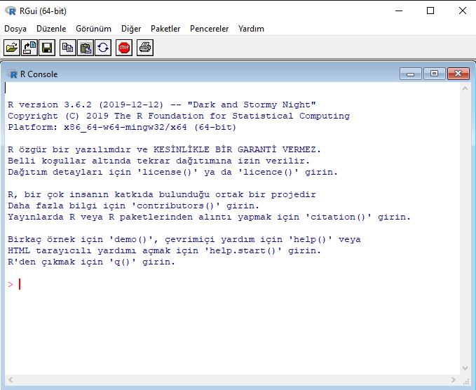
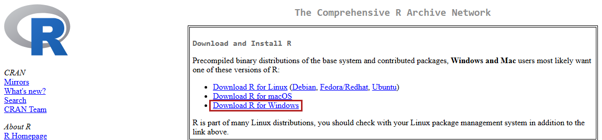
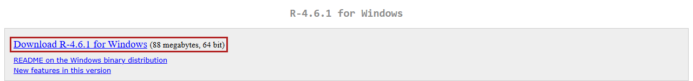
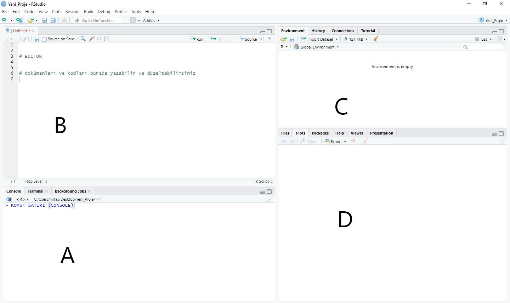
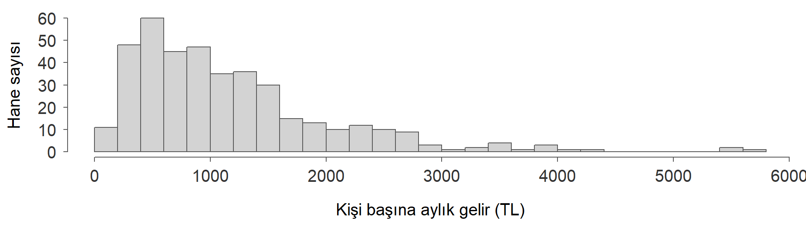

İstatistik I · R uygulaması
Yıldız Teknik Üniversitesi, İktisat Bölümü
R ve RStudio📖 Kitap: Bölüm 2 · R Programına Giriş
R ile ilk adımlarR?R, sonra RStudio1. R
2. RStudio
R ile çalışmayı kolaylaştıran geliştirme ortamıRStudio kendi başına hesap yapmaz, arka planda R’ı çalıştırır. Bu yüzden önce R kurulmalıdır.
R’ı indirmekhttps://cran.r-project.org/ adresinde işletim sisteminize uygun bağlantıyı seçin:

Windows için açılan sayfada en üstteki Download R-x.y.z for Windows bağlantısı:

R’ı kurmak ve açmak
.exe dosyasını çalıştırın, varsayılan seçeneklerle ilerleyinR’ı açtığınızda bu komut satırı (Console) gelir> işaretinin yanına bir komut yazıp Enter’a basın: 2 + 2R’ı kapatabilirsiniz; bundan sonra RStudio üzerinden kullanacağızR zaten kurulu olduğu için doğrudan RStudio Desktop indirme düğmesini kullanınR arka planda kendiliğinden çalışır
.R kod dosyaları (File > New File > R Script)R bir hesap makinesidir<- atama işaretidir (RStudio’da Alt + -). = da çalışır, ama <- yaygındır.# işaretinden sonrası açıklamadır, çalıştırılmaz.[1] 3.141593[1] 2.718282[1] 1[1] 2[1] Inf[1] NaNInf sonsuz, NaN tanımsız işlem (not a number), NA eksik değer (not available).
1e-15 ne demek?| Açık gösterim | Matematiksel gösterim | R çıktısı |
|---|---|---|
| 1000000 | 1e+06 |
|
| 0.0025 | 0.0025 |
|
| 0.0000015 | 1.5e-06 |
|
| 0.000000000000001 | 1e-15 |
e harfi “çarpı 10 üzeri” demektir; ile ilgisi yoktur.1e-15 → virgülden sonra 14 sıfır, sonra 1.Tek bir işlemdeki hata önemsizdir. Ama işlem milyonlarca kez tekrarlanırsa birikir:
Ortalamadan farkların toplamı matematiksel olarak her zaman sıfırdır (3. hafta).
[1] -4.440892e-16[1] TRUE-4.440892e-16 görürseniz: hesap hatası değil, temsil hatası.== ile değil, all.equal() ile sınayın.R’da her şey bir nesnedir: sayılar, vektörler, veri çerçeveleri, fonksiyonlar.
x ile X farklı nesnelerdir.2nesne ✗ nesne2 ✓ortalama_gelir gibi (alt çizgili yazım)ls() ya da RStudio’da Environment penceresiTemel nesne türleri: vektör, faktör, matris, liste, veri çerçevesi
Aynı türden değerlerin sıralı bir dizisi. En kolay yolu c():
Bir ürünün 10 denek tarafından 100 üzerinden değerlendirilmesi; altıncı değer eksik:
[1] 80[1] 65 78 94[1] 85 88 75Parantezleri kaldırıp skor[n-2:n] yazsaydık ne olurdu?
Karşılaştırma (==, !=, >, <, >=, <=) her elemana ayrı uygulanır, sonuç TRUE/FALSE:
[1] FALSE FALSE FALSE TRUE TRUE NA FALSE TRUE TRUE FALSE[1] 4[1] 94 100 85 88NA > 80 → NAis.na(skor) eksikleri bulur, skor[!is.na(skor)] eksik olmayanları seçer (!: değil)Satırlar gözlem birimleri, sütunlar değişkenler. Sütunlar farklı türde olabilir ama aynı uzunluktadır.
str() ve summary()'data.frame': 10 obs. of 2 variables:
$ skor : num 80 65 78 94 100 NA 55 85 88 75
$ cinsiyet: chr "Kadın" "Erkek" "Kadın" "Kadın" ... skor cinsiyet
Min. : 55 Length:10
1st Qu.: 75 Class :character
Median : 80 Mode :character
Mean : 80
3rd Qu.: 88
Max. :100
NA's :1 Yeni bir veriyle karşılaşınca ilk iş: sütunların türü doğru mu, eksik gözlem var mı?
R bir dosyayı çalışma dizininde arar: getwd()
Önerilmez
Yalnız sizin bilgisayarınızda çalışır. Ödevlerde en sık hata.
Önerilir: R projesi
File > New Project: projeyi açınca çalışma dizini proje klasörü olur.
odev/
├── odev.Rproj
├── Data/ <- veri
└── R/ <- kodDosya yollarını her zaman proje klasörüne göre (göreli) yazın: "Data/anket.csv"
str() ile sütun türlerine bakın.cannot open file) hatasında önce getwd(): nerede olduğunuza bakın.Bir fonksiyon argümanlar alır, bir çıktı üretir:
[1] NA[1] 80Error in mean.default(skor, TRUE): 'trim' must be numeric of length oneArgümanların adını yazmak iyi bir alışkanlıktır.
[1] 0.00 -1.07 -0.14 1.00 1.43 NA -1.79 0.36 0.57 -0.36na.rm = TRUE öntanımlı değerdir: argüman yazılmazsa bu kullanılır.
Yardım
Hata mesajını dikkatle okuyun: object not found, unexpected, cannot open file
Kitaptaki hane örneklemi: veriyi yükle, tanı, yeni bir değişken oluştur.
İçiliyor İçilmiyor
1090.620 1298.006 
İstatistik I · YTÜ İktisat Bölümü